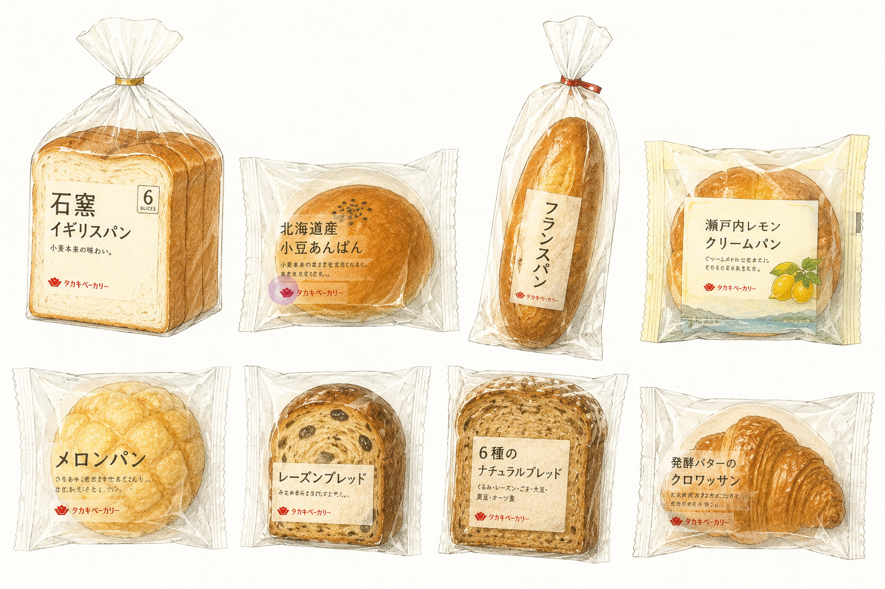

広島のローカルパンを調査しました。
●戦後復興とパン文化
1945年の原爆投下後、広島は復興を進める中で食生活も大きく変化しました。
小麦を使ったパンが学校給食や家庭に広まり、パンを食べる文化が定着していきました。
●アンデルセンの誕生
アンデルセンは、1948年に創業し、1952年に前身となる「パンホール」を広島市本通に開店しました。
その後、1967年に「広島アンデルセン」がオープンし、本格的なヨーロッパスタイルのパンや食文化を広島に広めました。セルフサービス方式の導入やデンマークの食文化の発信など、日本のパン文化にも大きな影響を与えています。

●タカキベーカリー
タカキベーカリーは、広島発祥の「アンデルセン」グループのパンメーカーです。食パンや石窯パンなど幅広い商品を展開し、全国で親しまれています。